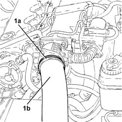
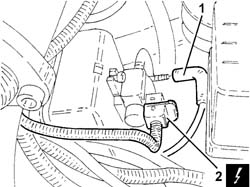
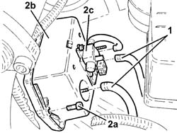
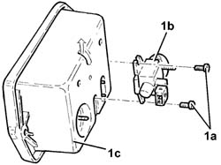

1080C70 VACUUM RESERVOIR - R.R.
- Path
- Procedures > 10 ENGINE > 1080 EXHAUST EMISSION CONTROL SYSTEM > 1080C exhaust gas recirculation system (e.g.r.) > 1080C70 VACUUM RESERVOIR - R.R.
- Kind
- repair procedure (removal / refitting; the operation number is the code)
- Applies to
- engines: 1.9 JTD 8V; all production periods
- Interactive page
- https://sloeber94.github.io/elrnDB-a147/en/#/3025066
Applies to: engines: 1.9 JTD 8V; all production periods
 Removing
Removing
 Refitting
Refitting1016A10 sound-proofing cover - r + r
1. Loosen band (1a) and disconnect the air delivery sleeve from heat exchanger to intake manifold (1b).

Applies to: engines: 1.9 JTD 8V; all production periods
1. Disconnect the vacuum pipe from the solenoid on the vacuum tank.
2. Disconnect the electrical connection from the solenoid on the vacuum tank.
 | Name | Connector |
|---|---|---|
2 | Butterfly casing solenoid valve |

Applies to: engines: 1.9 JTD 8V; all production periods
1. Disconnect the remaining vacuum pipes from the vacuum tank.
2. Undo bolts (2a) and remove vacuum tank (2b) complete with solenoid (2c).

Applies to: engines: 1.9 JTD 8V; all production periods
1. Working at the bench, undo bolts (1a) and separate solenoid (1b) from the vacuum tank (1c).

Applies to: engines: 1.9 JTD 8V; all production periods
Refitting
RemovingFit the solenoid to the vacuum tank and secure by tightening retaining bolts.
Fit the vacuum tank into its housing in the engine bay and tighten the retaining bolt and nut.
Connect the vacuum pipes to the vacuum tank.
Connect the electrical connection to the solenoid on the vacuum tank.
| Name | Connector |
|---|---|---|
- | Butterfly casing solenoid valve |
Connect the vacuum pipes to the solenoid on the vacuum tank.
Conect the air supply hose from the heat exchanger to the inlet manifold.